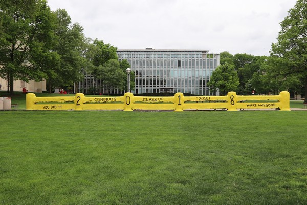

I'm working with the AD FS Help team to create support tools to resolve AD FS issues more effectively.
Working with PowerShell and C#. Designed security measured to mitigate file upload attacks.
Currently taking a break to spend a super-awesome summer at Microsoft!
Favorite classes taken:
Graduated May 2018 with a B.S. in Psychology at Carnegie Mellon University.
I'm posting flyers, picket-signing, painting fences, and building youreawesome.org to help make the world a kinder and more awesome place.
Some pictures below:
Fence painted to congratulate the Class of 2018 for graduating.
Me picket-signing at the Seattle Street Food Fest 2018. Photo thanks to Colin Lundgren.